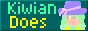

Hello and welcome to The Kiwi Zone! You are safe here. This is where I will have my art and projects linked, as well as where I'll maybe make blog posts sometimes.
Currently mostly working on a voxel-style engine called KiwiCubed. It might be open to check out some time later this year.
If it wasn't a bit obvious, I like programming. I make games in C++/OpenGL, I make websites sometimes, and I've made a few web games too.
I also make some pixel art of my oc, Pixian. And sometimes I even animate it a little. Art isn't quite my strong suit.
Oh, and I almost forgot to mention I'm trans and go by Kiwian. (White on yellow is great for the eyes).
Almost all of the colors in the website are from a single color palette, that being Pixian's. I try my best to make all art of her and associated works with that palette.
Credit to theabsoluterealm for inspiration in my font.
If you would really like, you can go back to the beginning.
Or you can add my button to your site !! 
I don't wanna make another neocities account so go play BerryBand here!!!
Some buttons for you